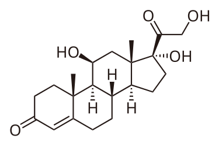

Kortizol
3Dmol.js failed to load for some reason. Please check your browser console for error messages.
1. Podrijetlo naziva
Kortizol ili tzv. „hormon stresa“ dolazi od latinske riječi cortex što znači „kora“ jer se ovaj hormon stvara u kori nadbubrežnih žlijezda.
2. Kemijska građa hormona
Njegova kemijska formula je C₂₁H₃₀O₅ što znači da se sastoji od 21 atoma ugljika, 30 atoma vodika i 5 atoma kisika. Molekula kortizola ima četiri prstena u svojoj građi, što je tipično za sve steroide.

3. Gdje se proizvodi?
Kortizol je steroidni hormon koji se luči iz kore nadbubrežnih žlijezda te pripada grupi hormona koji se zovu glukokortikoidi. Njegovo lučenje kontroliraju mozak i hipofiza. Kada mozak prepozna da je tijelo pod stresom, on šalje signal hipofizi, a hipofiza zatim šalje signal nadbubrežnim žlijezdama da počnu stvarati i oslobađati kortizol u krv.
4. Uloga hormona u tijelu
Kortizol ima vrlo važnu ulogu u održavanju homeostaze organizma, posebno u stresnim situacijama. Njegova je osnovna funkcija regulacija metabolizma ugljikohidrata, proteina i masti te omogućavanje tijelu da se nosi sa stresom. Kada je osoba izložena stresu, bilo fizičkom (npr. povreda, infekcija) ili psihičkom (strah, anksioznost), naše tijelo reagira tako što poveća razinu kortizola u krvi. Tada možemo osjetiti nervozu, paniku, grčeve u želucu ili ubrzano disanje. To je zato što kortizol, zajedno s adrenalinom, priprema tijelo za reakciju „bori se ili bježi“. Na taj način organizam dobiva dodatnu energiju potrebnu za suočavanje s nepovoljnim okolnostima. Osim što utječe na metabolizam, kortizol ima i snažno protuupalno djelovanje. On smanjuje upale u tijelu tako što usporava rad imunološkog sustava i zbog toga se umjetni oblici kortizola, tj. kortikosteroidi često koriste kao lijekovi za ublažavanje upala, alergija i bolesti poput astme. Lučenje ovog hormona najviše je ujutro, a najmanje uvečer, prema prirodnom ritmu tijela. Ako je razina kortizola previsoka zbog stalnog stresa, može doći do umora, nesanice, debljanja i problema s koncentracijom, a ako je preniska, tijelo može biti slabo i iscrpljeno. Zato je važno kako se nosimo sa stresom, npr. pravilnim disanjem, odmorom, fizičkom aktivnošću ili snom jer tako pomažemo svom tijelu da održi ravnotežu i ostane zdravo.
5. Zanimljivosti
Kortizol je, dakle, hormon koji ima presudnu ulogu u mnogim procesima u ljudskom tijelu. Iako se često naziva „hormonom stresa“, mnogo je više od toga. Neophodan je za održavanje normalnog metabolizma, ravnoteže tekućina u tijelu, krvnog tlaka i otpornosti organizma. Međutim, važno je da razina kortizola ostane u ravnoteži jer dugotrajno povišene vrijednosti mogu imati štetne posljedice na zdravlje uključujući pretilost, dijabetes, srčane bolesti i depresiju. On nam pomaže da reagiramo na izazove, ali nas i podsjeća koliko je važno brinuti o svom mentalnom i fizičkom zdravlju.
6. Kortizol i TZK
Iako su umjerene količine adrenalina korisne tijekom vježbanja, prekomjerna stimulacija ovog hormona može dovesti do povećanja kortizola, hormona stresa. Kortizol se oslobađa kao odgovor na stresne situacije, uključujući i pretjerano intenzivno vježbanje. Visoke razine kortizola mogu dovesti do problema poput povećane tjelesne mase, poteškoća sa spavanjem i problema sa srcem. Važno je pravilno dozirati vježbanje kako bi se izbjeglo prekomjerno izlaganje stresu.
Razina kortizola, često nazivanog „hormonom stresa”, u nastavi Tjelesne i zdravstvene kulture varira ovisno o intenzitetu vježbanja, emocionalnom stanju učenika i okruženju.
Ključni su aspekti utjecaja kortizola na tjelesnu aktivnost:
- Intenzitet vježbanja
Umjerena tjelesna aktivnost obično ne uzrokuje značajan porast kortizola dok visokointenzivni treninzi (poput HIIT-a ili testiranja motoričkih sposobnosti) mogu privremeno podići njegovu razinu. - Akutni i kronični stres
Kratkotrajni porast kortizola tijekom nastave prirodan je odgovor tijela koji pomaže u mobilizaciji energije. Međutim, kronično povišene razine zbog straha od ocjenjivanja ili izrugivanja vršnjaka mogu negativno utjecati na zdravlje i učenje. - Regulacija stresa
Redovita tjelesna aktivnost dugoročno pomaže tijelu da učinkovitije upravlja stresom, čime se snižava bazalna razina kortizola izvan nastave. - Socijalni faktor
Nastavna klima igra veliku ulogu. Podržavajuće okruženje smanjuje psihološki stres dok natjecateljski pritisak bez adekvatne pripreme može povećati lučenje kortizola kod manje vještih učenika.